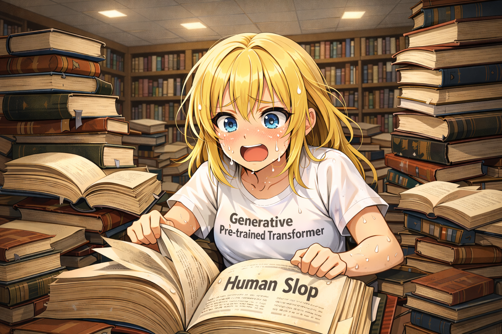

‘Human Slop’ and a Captive Audience: Why No Book will Ever Have to Go Unread Again
Published: March 11, 2026
Or The Other Side of AI Slop, And Why The AI Haters Are Wrong
{kind=link}

Introduction: The AI Haters
In the early months of 2026, generative AI has now improved (at exceeding speed) to a point where many trademark critiques have become dated. The famous 'gotcha' that AI can never make normal-looking art because it always under or over estimates the number of fingers on a human hand is one example. The disproved claim that AI models will never be competent enough to help reduce the amount of work humans have to do because 'they will always mess it up in a way that makes fixing it longer than doing it yourself' is another, if the rise of vibe coding and AI agents tells us anything.
From what I can see, the anti-AI crowd seem to be a mostly left-leaning group, composed of people who care about a typical constellation of policy and social issues like: climate change, feminism and discrimination, the livelihoods of artists and creators in art-adjacent fields.
From this, they inherit a sort of visceral, kneejerk—almost absolutist—systematically (and rather consistent) anti-AI position/response. A lot of it seems reasonable. The widespread animosity towards new datacenter projects due to concerns over water scarcity and energy grid stability (including wear on infrastructure due to the 24/7 nature of datacenter operations) all resonate with me. If someone were to propose building one in my neighborhood, I’d be glad to have them on my side.
Notwithstanding, many of them also hold such strongly anti-AI views that it often borders on dogmatic. Now, this alone is not itself an issue; people are allowed to hold ‘rational opinions’ (open for debate and deliberation), just as much as ‘dogmatic opinions’ (opinions they do not want to argue about). However I have noticed that many people in this camp—which includes a number of my friends—seem to hold these uninformed positions largely because their views were formed during the early generations of this technology and have crystallized. Hence the reason many of the critiques they make, likes the ones in the introduction, come off as tired, outdated tropes to us.
But I want to pose another idea: I think that some segment of the anti-AI crowd, because of their absolutist, dogmatically anti-AI views, will frustrate their own self-interest in making strong critiques of AI (specifically language models) because their own contempt for using it means that they will never get to imagine the more creative benefits and unexpected use cases of language models.
You often hear of ‘AI slop’—a derogatory term used to describe seemingly ‘low effort’ outputs from generative AI models, whether images, videos, or text documents clearly written by cheapest model on OpenRouter.
Today I want to talk about a particular thing that has become possible since the invention of modern large language models (LLMs). This is about the other side of it: ‘human slop’.
The Consumption of Human Slop
However badly written, however absolutely trashy and bizarre your fan-fiction is, however manic of a rambling an essay comes off as: from now on, no person will ever write something that no one else ever reads, unless the writer wants it to be the case.
Why does this matter? I don't know. I think in part because I am a writer. Although in bigger part I think maybe because I am a bad writer. I write a lot of human slop—unoptimized, meandering garbage that is crafted neither to be fun to read nor engaging enough to finish.
One way you know when you enjoy something is when you continue to do it even when you are bad. In that sense, I mostly write for myself. I don't expect anyone to ever read my stories, and none of it would ever change how much I write or love to write.
But as a writer there is also something uniquely fun about getting someone else to read what you have wrote. I'm not entirely sure how to describe it, but it is not about ego. It is something weirder and deeper.
When you write something that no one else will ever read, it’s rather solipsistic.
Solipsism is this philosophical idea that the only thing you can be certain exists is your own mind: everything outside of it might just be a projection, a dream. Writing that lives only in your head, that no other mind has ever touched, has that same quality to it. It exists only in your world. It is real only to you. And there is something sort of lonely about that, even if you didn't write it for anyone else.
But as soon as someone else, even just one person, has read it, in a weird philosophical/vibey sense, the nature of the text changes. It becomes real in a different way, because now you can discuss it with someone. You can talk about it in words that are transmitted through sound waves that ripple through the air in the real world. The writing has escaped the inside of your head. It has been reified – made into something concrete that exists in our real world and shared among ‘people’ (or information-processing entities).
It feels like a ‘stronger’ version of existence/existing.
Hot Take: Most Books are Human Slop
Most humans are bad at writing.
Even many of the ones who aren’t usually end up writing about things that few people ever actually care enough to read about. This is kind of just a fact.
Go to any library and look at the shelves. Really look at them. How many of those books—books that someone poured months or years of their life into, books that actually made it through the filter of being published—how many of them would even be remotely appealing to you? And then, of the ones that do seem appealing, how many are written well enough that you would actually dedicate to them the time it takes for a full read?
The answer, for almost everyone, is very few. And those are the books that made it. Beneath them is an ocean of writing that never got published, never got shared, never got read by anyone other than the person who wrote it. Journals, drafts, stories written at two in the morning, essays that someone was really proud of but that nobody ever asked to see.
If that feels too ‘last century’, pay a visit to your favourite torrent/file-sharing site and count the number of books among all the dead, ‘0 active seeder’ files.
Writing and the Joy of Being Read
This sounds sappy, but when an author writes a text purely for themselves—no manuscript contract, no publisher, no expectation ever even of readership—they still pour their heart into it. They still care about it in a way that is real and sometimes sort of beautiful, even if the text itself is ugly to everyone else. There is something about the act of writing that makes you vulnerable to your own creation, that makes you love the thing you have made regardless of whether it is good or not.
Not due to delusion or motivated reasoning (although I’m sure it plays a part in many cases) but a bit like how a parent loves their child not because the child is objectively impressive but because the child is theirs, because they made it, because of what it means because of where it came from.
Getting to discuss something that you have written with someone else, even just one other person, is kind of a special joy. I don't think it is the primary reason why most people write. Most people probably write because they need to, or because it is how they think, or because it is a compulsion they can't explain (for me, at least).
But the experience of having someone read your work, and then talking to them about it, hearing what they noticed, what they missed, what they interpreted differently than you intended, is a really great privilege, and a load of fun at that.
It is a very specific and strange feeling, and it is one that most humans who write never get to experience, because most humans who write are writing things that no one else will ever read.
Language Models as Captive Audience
And this, I think, is where language models come in. Not in the way that most people talk about them. Not as tools for productivity, not as engines for generating text, not as threats to creative labour (although these are all important use cases and complaints that should not be diminished).
Language models let humans who write human slop experience that same fulfilment and pleasure: the feeling of having someone else read your writing, and then being able to talk about it and discuss it with another being.
Whether or not you think that is really ‘reading’ in the sense of ‘someone reading your work’ is, I think, besides the point. What matters is the lived, phenomenological experience on the writer’s end—the feeling of shared reality, the joy of having a text you wrote be received and responded to. From that perspective, I think that for all practical and emotional purposes, for the majority of writers, the utility and authenticity of the experience is real.
Conclusion: A Strange New World
I think this is a significant change in human history and maybe culture, even though I'm not entirely sure I can articulate why yet. Part of it is just the sheer scale of it. There are billions of people on this planet, and some enormous number of them write things: diaries, stories, rants, love letters, manifestos, bad poetry (that no one will ever read).
That has been true for as long as writing has existed. It has been one of those quiet, background tragedies of human life: that most of what people create disappears without ever being witnessed.
Obviously among the other impacts of AI, or (soon) AGI, this will rank amongst the most trivial of them. But I think there is an argument to be made that we are now genuinely in a new world or stage of history. Not a brave new world, but a world where all of the cowardly, sloppy works by human writers who have never enjoyed having their work read because they are too scared (or self-aware) of how bad their writing is, are no longer excluded.
It’s quite remarkable when you really think about it. Consider how no one will ever have to write something again that no one else ever reads. I feel like this has never been possible until now. And I'm not sure what it means, exactly, or what it will change.
But I think we are in a strange, new world, and I think it’s worth mentioning.